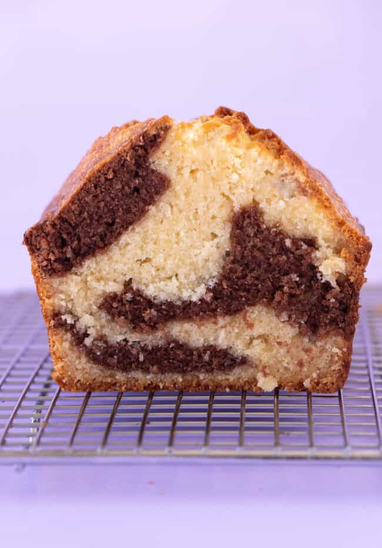

This gorgeous loaf cake boasts swirls of both chocolate and vanilla.
Made using just one cake batter, it’s surprisingly simple to put together.
I’ll show you how to create those mouthwatering swirls and achieve a moist and tender crumb.
HOW TO MAKE MARBLE CAKE
INGREDIENTS
- 230 grams unsalted butter, softened
- 200 grams caster sugar
- 2 teaspoons vanilla extract
- 3 large eggs, room temperature
- 280 grams plain flour or all purpose flour
- 1 teaspoon baking powder
- 120 ml full fat or whole milk
INGREDIENTS
- 1 tablespoon cocoa powder
- 1 tablespoon full fat or whole milk
INSTRUCTIONS
- In a large mixing bowl, add butter, sugar and vanilla. Beat with an electric mixer on low speed until combined and then turn speed up to medium and beat for a further 1-2 minutes or until butter turns pale, creamy and almost fluffy.
- Add eggs, one at a time, and beat briefly to combine – don’t worry if the mixture goes a little bit lumpy at this stage – then scrape down the sides of the bowl.
- Add flour, baking powder and salt. Start to mix together on a low speed. Add milk. Continue to mix on low speed until the cake batter is smooth and creamy (but try not to over mix).
- Transfer 1 cup of cake batter to a mixing bowl. Add cocoa powder and milk and gently stir by hand until combined.
- Use a dessert spoon to gently dollop batter into your prepared tin, alternating between vanilla batter and chocolate batter. There’s no need to exact. Keep layering until you’ve used all the cake batter, then gently smooth the top.
- Bake for approximately 1 hour and 10 minutes or until a skewer inserted into the middle of the cake comes out clean. If your cake is very brown after 50 minutes, loosely cover the top with aluminium foil.
- Transfer cake to a wire rack to cool completely. Cut into thick slices to serve.